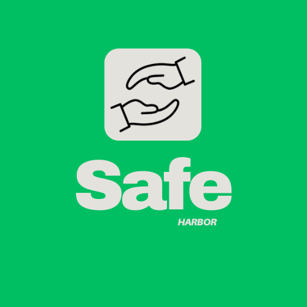

At Safe Harbour, we're committed to providing refuge, support, and hope to those who need it most. Your contribution, no matter how small, can help us continue to offer critical services to refugees and asylum seekers in Cape Town. Whether it's a one-time donation, regular support, or volunteering your time, every bit helps in building a safer, more compassionate community. Together, we can create a safe haven for those fleeing hardship. Join us today and be part of a movement that truly makes a difference.
Imagine how the world would be if we still needed to wait minutes, hours, or even days, or even months to communicate with someone far away? Certainly, the privileges granted by this technology outweigh its risks when measured on the scale.
If you would like to learn more about our mission or find out how you can get involved, we encourage you to reach out to us at Safe Harbour. Whether you have questions about our services, are interested in partnership opportunities, or simply want to offer your support, our team is here to help. Please don't hesitate to contact us through our website or give us a call. Together, we can make a meaningful impact in the lives of those who need it most. Your voice, your time, and your generosity can make a world of difference.